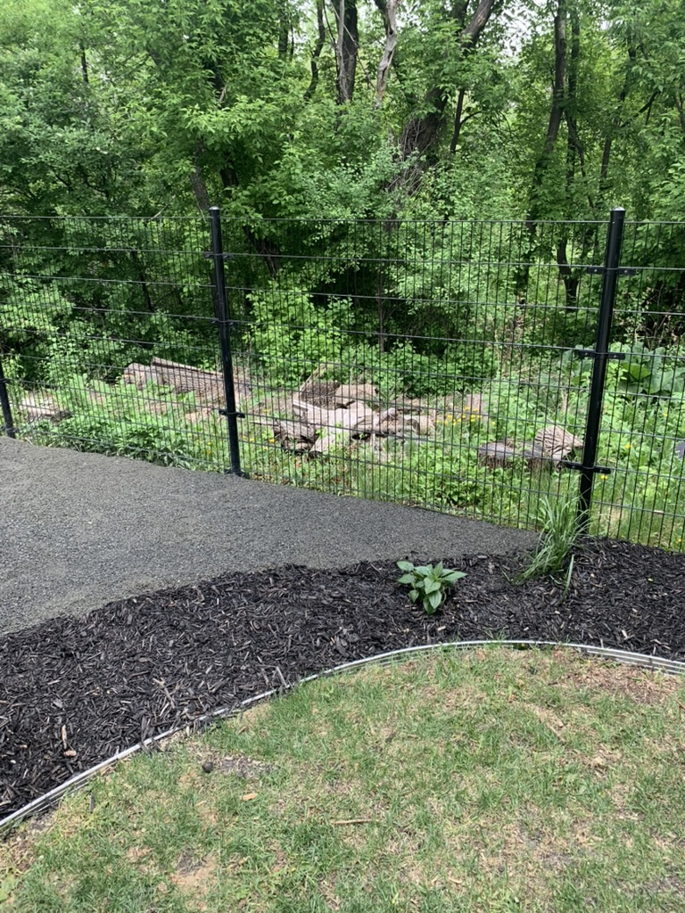
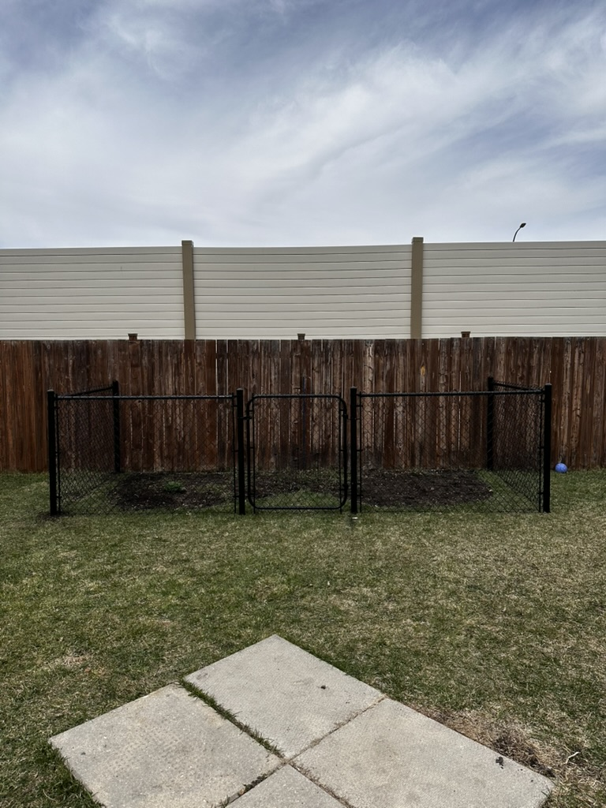
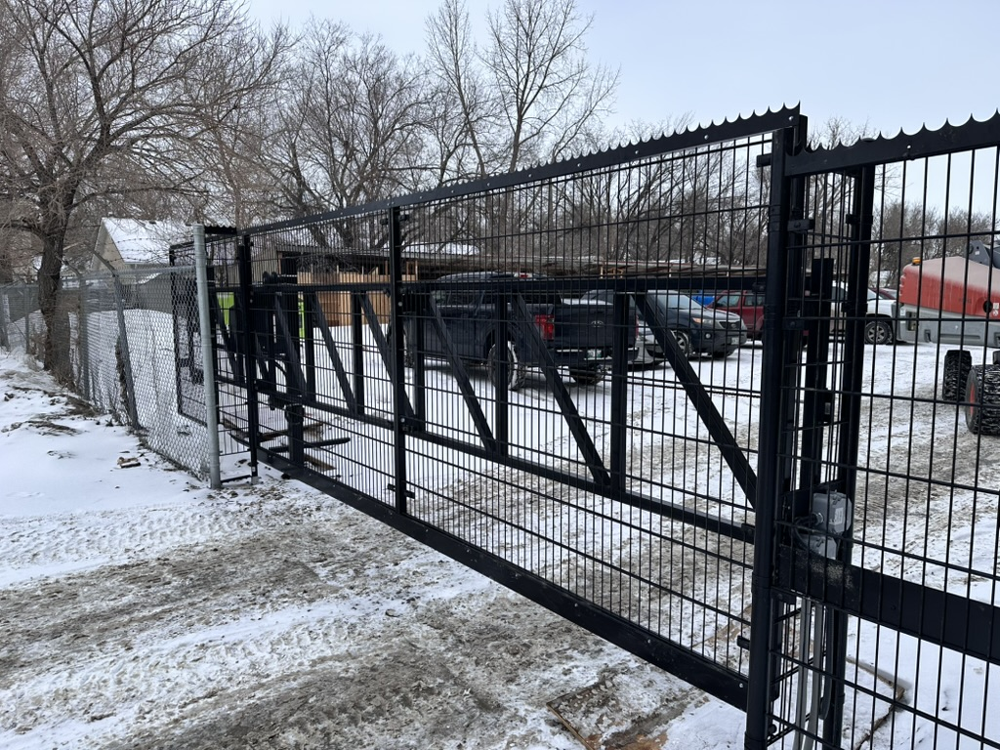
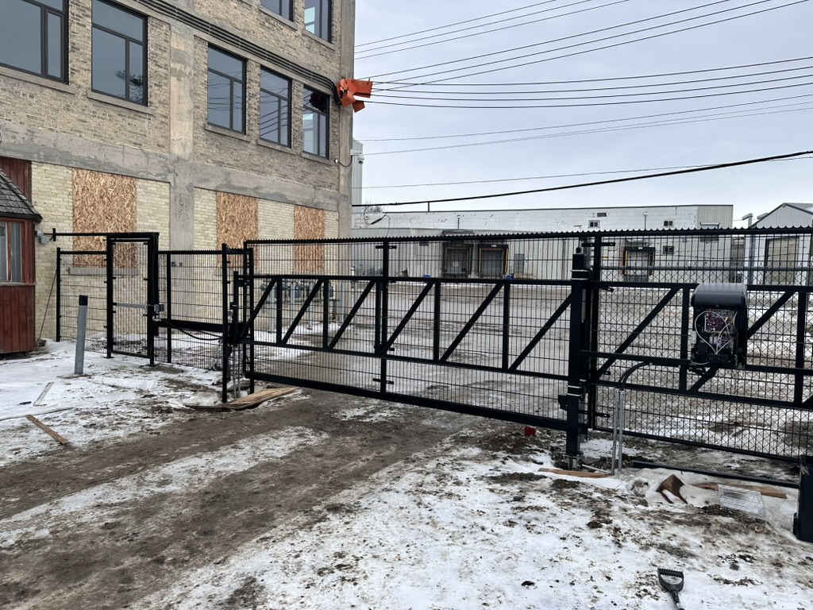

A clean, modern fence that defines your property without blocking the view. Welded wire mesh delivers quiet strength with a minimal footprint — ideal for gardens, yards, and open landscapes.
What Is Welded Wire
Welded wire mesh fencing is made from steel wires that are electrically welded at every intersection to form a rigid, flat panel. Unlike chain link, which is woven and flexible, welded wire panels are stiff and hold their shape without sagging or stretching. The result is a fence with clean horizontal and vertical lines that looks engineered and intentional rather than utilitarian. From a few feet away, the thin wire virtually disappears, preserving your view of gardens, neighbouring green spaces, or scenic surroundings.
We install welded wire mesh on driven metal posts — the same frost-heave-resistant method we use across all our fence types. The rigid panels attach to the posts with brackets or clips, creating a secure connection that stays tight without the need for tension wires or stretching bars. Welded wire is available with galvanized, PVC-coated, or powder-coated finishes, giving you the option to match the fence to your property. Black-coated welded wire is especially popular because it blends into the background even more than galvanized.

Residential Applications
Welded wire fencing has become a favourite among Winnipeg homeowners who want a boundary fence that does not feel like a wall. It is ideal for front yards where municipal bylaws restrict fence height and privacy fencing would look out of place, and for side yards where you want to contain children and pets without losing the open, spacious feel of your lot. Around gardens, welded wire keeps out rabbits and small animals while letting sunlight and air flow freely to your plants.
For properties that back onto parks, rivers, golf courses, or other open spaces, welded wire is the obvious choice — it establishes a clear property boundary without obstructing the view that makes your location special. Many homeowners in neighbourhoods like Charleswood, Bridgwater, and South Pointe choose welded wire for exactly this reason. The fence quietly says "this is my property" without saying "stay out." Paired with landscaping, a welded wire fence can enhance your outdoor living space rather than dominating it.

Commercial Applications
Welded wire mesh is widely used in commercial and institutional settings where visibility and security need to coexist. Schools, daycares, and playgrounds rely on welded wire fencing because staff can see through it to monitor children while the rigid panels prevent climbing. Sports facilities, tennis courts, and baseball diamonds use taller welded wire panels to contain balls without blocking spectator views or airflow.
For commercial properties, parking lots, and storage yards, welded wire provides a clear perimeter boundary that deters casual trespass while maintaining an open, professional appearance. Unlike chain link, which can look industrial, welded wire's clean grid pattern gives commercial properties a more polished look. We install commercial-grade welded wire with heavier gauge wire and closer mesh spacing for applications that demand extra strength and security. Anti-climb mesh options with very small openings are also available for high-security installations.

Mesh Options & Finishes
Welded wire mesh comes in a range of opening sizes and wire gauges, each suited to different applications. Standard residential mesh uses 2-inch by 4-inch openings — small enough to contain most pets and deter wildlife, while large enough to maintain excellent visibility. For garden protection or small-pet containment, we offer mesh with 1-inch by 2-inch openings that keep out rabbits and smaller animals. On the commercial end, heavy-gauge mesh with 3-inch by 3-inch openings provides maximum strength for perimeter security.
The wire gauge (thickness) determines the overall strength of the panel. Residential panels typically use 6-gauge to 8-gauge wire, which provides ample rigidity for yard fencing. Commercial and security applications may use 4-gauge wire for panels that are extremely difficult to cut or bend. All of our welded wire panels are available in galvanized steel for basic corrosion protection, or with a PVC or powder-coat finish in black, green, or brown. The coated options are popular for residential installations because they blend into landscaping and resist corrosion even better than galvanized alone.
